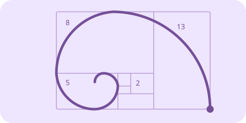
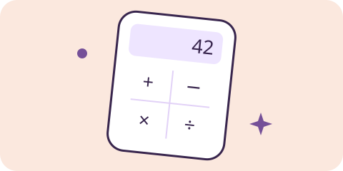
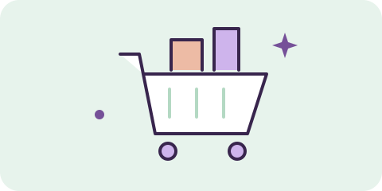

01 / GAME · INTERACTIVE
Rock, Paper, Scissors
A two-player terminal game with hidden choices, winner detection, and repeat rounds. Now with a computer opponent, too.
Enter the arenaTHE PROJECT PLAYGROUND / ASSIGNMENT 01
Four mini projects from class. All four ready to try in your browser. Make a move, follow a pattern, crunch a number, or fill a basket.
Let's playOriginally written in Python for Assignment 1. The interactive versions below are browser adaptations built with Codex.
01 / GAME · INTERACTIVE
A two-player terminal game with hidden choices, winner detection, and repeat rounds. Now with a computer opponent, too.
Enter the arena
02 / MATH · INTERACTIVE
Start at 0 and 1. Add the last two terms. A loop from the notebook becomes a sequence you can build and explore.
Follow the pattern
03 / MATH · INTERACTIVE
Two numbers and four operations. Try decimals and negative numbers, inspect the result, and keep calculating.
Do the math
04 / SIMULATION · INTERACTIVE
A little grocery shelf with limited stock. Add items, adjust your basket, and watch the total update as you go.
Fill a basketPLAY / 01
The AI looks for patterns in earlier rounds. Your current move stays secret.
Player 1's move is locked in.
Pass the device to Player 2 without looking back.
Choose your move to start round 1.
Rock beats scissors. Scissors beat paper. Paper beats rock.
The original uses hidden Player 1 input, validates both choices, compares the three winning combinations, and asks to play again. This adaptation keeps that logic and adds a score, animation, and an optional computer opponent. Two-player mode is pass-and-play on one device; the handoff screen keeps the first choice off-screen.
The adaptive opponent samples your previous moves and counters the sampled move, with a small chance of a random pick. It commits before you choose. Resetting the match clears its memory.
EXPLORE / 02
Each square grows from the two before it.
TERM 12 OF 12
Add the two previous terms to get the next.
As the terms grow, the ratio approaches the golden ratio: about 1.618.
The notebook starts with [0, 1], then appends the sum of the last two numbers until it reaches the requested length. Its special cases return 0 for one term and [0, 1] for two. Here, whole-number input is checked before generating; BigInt keeps even the 100th term exact.
seq = [0, 1]
for i in range(2, n):
seq.append(seq[i - 1] + seq[i - 2])The spiral uses quarter-circle arcs in Fibonacci-sized squares. For long sequences, the drawing shows the first 12 terms so the smaller squares remain readable; every generated value is still available below it.
CALCULATE / 03
12 + 3 =
15The original calculator takes two numbers and selects addition, subtraction, multiplication, or division with conditionals. This version follows the same rule, checks for missing or invalid numbers, and stops division by zero. Submit again to keep calculating; the last five successful calculations stay visible until you reset or leave the page.
Results are displayed to 12 significant digits. Very large or very small values use scientific notation.
SIMULATE / 04
Adding to your basket reduces shelf stock. Removing an item puts it back.
A fresh start. Pick something from the shelf.
Your basket is empty.
The original notebook stores a shelf of three groceries and a cart of item quantities. This adaptation keeps the original prices and stock: 2 boxes of Frosted Flakes at $2.99, 3 cartons of eggs at $5.99, and 4 sourdough loaves at $3.99. Add a whole-number quantity, use the basket's plus and minus controls, or remove a line. Empty basket returns everything to the shelf.
Totals use whole cents to avoid rounding drift. The basket stays in this page's memory and starts empty when you reload.
Classroom logic, a browser canvas, and room to keep learning. Back to the top ↑